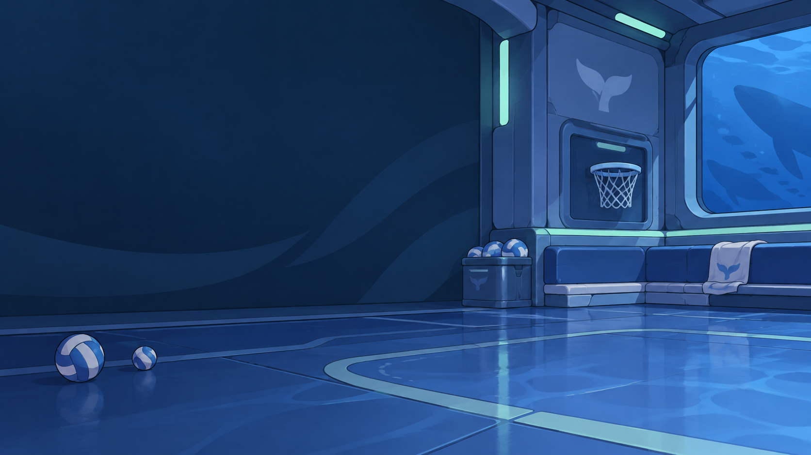
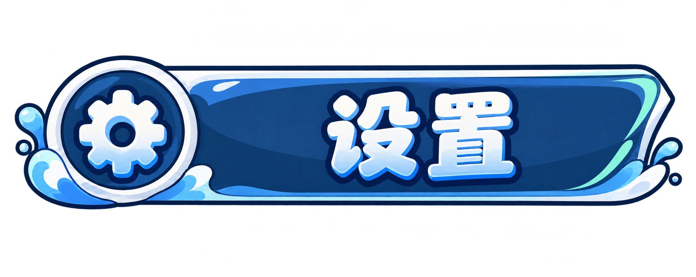
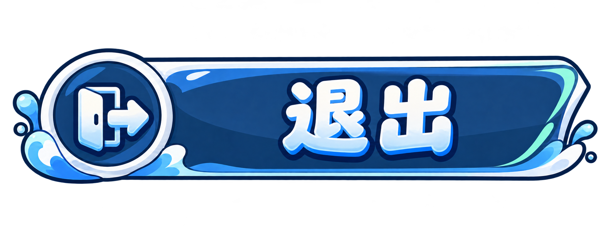

<!doctype html>
<html lang="zh-CN">
<meta charset="utf-8">
<meta name="viewport" content="width=device-width, initial-scale=1">
<title>玩个球 · 肥鱼主菜单分层小样</title>
<style>
  * { box-sizing: border-box; }
  html, body { margin: 0; background: #0c1b35; font-family: 'Microsoft YaHei', sans-serif; }
  main { width: 100%; aspect-ratio: 16 / 9; position: relative; overflow: hidden; isolation: isolate; }
  .background { position: absolute; inset: 0; width: 100%; height: 100%; object-fit: cover; z-index: -2; }
  .shade { position: absolute; inset: 0; background: linear-gradient(90deg, #06132a55, transparent 66%); z-index: -1; pointer-events: none; }
  .title { position: absolute; left: 5%; top: 13%; width: 45%; height: auto; pointer-events: none; }
  .contact { position: absolute; left: 57%; width: 29%; height: 4%; bottom: 8%; border-radius: 50%; background: #05152c80; filter: blur(6px); pointer-events: none; }
  .character { position: absolute; height: 95%; width: auto; right: 1%; bottom: 5%; pointer-events: none; }
  .start { position: absolute; left: 8%; top: 51%; width: 36%; height: 16%; border: 0; padding: 0; background: transparent; overflow: hidden; color: #f3fbff; font: inherit; transition: transform .12s; }
  .start img { position: absolute; width: 100%; height: auto; top: 50%; left: 0; transform: translateY(-50%); transition: filter .16s; pointer-events: none; }
  .start:hover img, .start:focus-visible img { filter: brightness(1.17); }
  .start:active { transform: translateY(2px); }
  .start:focus-visible { outline: 2px solid #b4f4e1; outline-offset: 2px; border-radius: 18px; }
  nav { position: absolute; left: 8%; top: 70%; width: 36%; height: 14%; display: flex; align-items: center; gap: 3%; }
  .secondary { flex: 1; height: 100%; position: relative; padding: 0; border: 0; background: transparent; overflow: hidden; transition: transform .12s; }
  .secondary img { position: absolute; width: 100%; height: auto; top: 50%; left: 0; transform: translateY(-50%); filter: brightness(.92); transition: filter .16s; pointer-events: none; }
  .secondary:hover img, .secondary:focus-visible img { filter: brightness(1.15); }
  .secondary:active { transform: translateY(2px); }
  .secondary:focus-visible { outline: 2px solid #b4f4e1; outline-offset: 2px; border-radius: 12px; }
  .feedback { position: absolute; margin: 0; left: 8%; top: 84%; width: 40%; color: #c4e4f6; font-size: clamp(11px, 1.1vw, 14px); min-height: 1.5em; }
</style>
<main aria-label="已认可肥鱼角色与新标题、背景、按钮分层组合的主菜单小样">
  
  <div class="shade"></div>
  
  <div class="contact"></div>
  
  <button type="button" class="start" aria-label="开始游戏">
    
  </button>
  <nav aria-label="次级菜单">
    <button type="button" class="secondary" aria-label="设置"></button>
    <button type="button" class="secondary" aria-label="退出"></button>
  </nav>
  <p class="feedback" aria-live="polite"></p>
</main>
<script>
  // 按用户要求，三按钮的图标/文字均已整体生图；此处仅保留命名、焦点与点击请求占位。
  document.querySelectorAll('button').forEach(button => button.addEventListener('click', () => {
    const label = button.getAttribute('aria-label') || button.textContent.trim();
    document.querySelector('.feedback').textContent = `${label} · 美术小样，功能尚未接入`;
  }));
</script>
</html>
